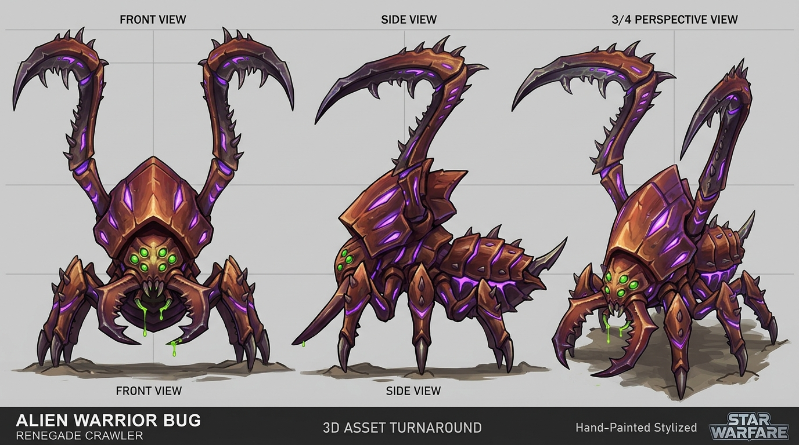

STAR WARFARE · IN-GAME ART PROTOTYPE
兵蟲：補足甲片結構與手繪細節
Warrior／兵蟲 對應遊戲的 crawler → Monster ID 0 → bug01。上一版與原版的精細度仍有明顯落差：甲殼缺少有結構的明暗，腿部像光滑管件。本輪改用六區域手繪貼圖，重做互相覆蓋的尖形腿甲，並補強頭罩折面。以下保留上一版、這一版與原版模型，方便直接判斷改善程度。
概念圖 → 調整模型與骨骼 → UV 對應貼圖 → 載入遊戲 → 檢查動作、尺寸與命中
上一版與這一版：側面看甲片結構
先看遊戲距離仍能辨識的部位：腿甲的中央稜線與覆蓋關係、腹甲明暗、頭罩折面，以及刀刃的深淺區分。新增貼圖細節不代表已達到原版品質；四足仍沿用原動畫。


同一光線與鏡頭，對照頭部細節
檢查頭罩的大面是否有清楚折面、邊緣亮線與凹處陰影，以及六眼和口器是否仍可辨識。保留上一輪已調整的頭部比例；兩側使用同一近景尺度，沒有重新打光或修圖。
近景


原版與這一版：對照完整姿勢
以下是 Godot 直接輸出的畫面，使用相同光線、鏡頭尺度與姿勢取樣時間。點圖片可看原尺寸。
動作
方向

待機 · 側面。靜態截圖用來檢查輪廓；完整動畫可由下方測試場景播放。
放進第一關

WarfareGameWorld._spawn_enemy 生成。為看清模型，此處隱藏玩家與 HUD，改用近距離觀察鏡頭。設計依據與實際貼圖



這一版的交付範圍
這是第一隻敵人的美術迭代，仍需與原版及概念圖一起驗收。這輪補上有結構的手繪明暗與尖形腿甲，不把增加面數或通過程式測試當作已達原版精細度。兵蟲的數值、AI、原四足動作及既有骨架保留；腿部動作、貼圖對位與整體風格仍有後續調整空間。